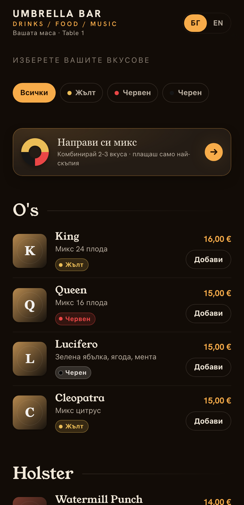

Full-stack MVP
Nargile Orders
QR order-to-table platform for a hookah lounge
ProblemGuests wait to flag a waiter; staff re-type every order into the till by hand.
BuiltA bilingual (BG / EN) customer menu with a custom “build-your-mix” flavour builder, live order tracking, and a staff dashboard — products & availability, a visual table/QR planner, a live orders board with a server-enforced status workflow, and history. All on a contract-first OpenAPI backend.
My roleDesigned and built end to end — frontend, API, database schema and Dockerized deployment.
ReactTypeScriptNode / ExpressMySQLOpenAPIDocker